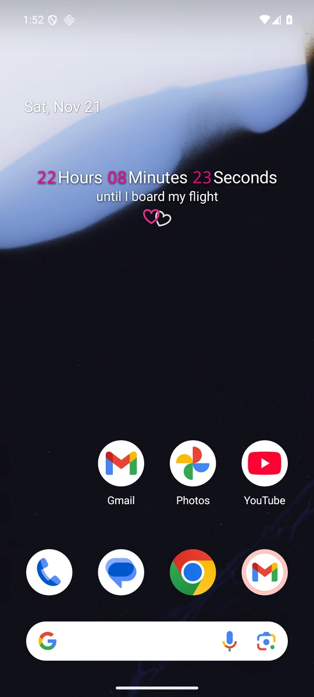
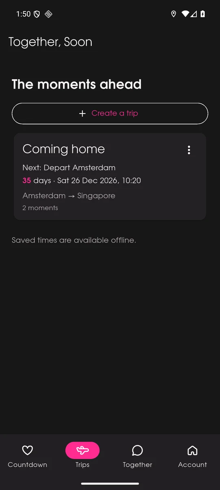

Android app in closed development
Far apart.
Together, soon.
A shared trip timeline and a home screen countdown for the people waiting for each other.
Plan the flight, the connection, and the moment you meet. Whether you’re traveling solo or taking the trip together, you can share the milestones that matter and see when a delay changes the plan.
Explore the app
How it works
A shared view of the journey.
Give each other enough context to follow the trip, from getting to the airport to arriving at the meeting point.

- Plan the moments that matter
- Build a timeline for flights, trains, buses, or a meeting at arrivals. Each moment displays its own local time, so the traveler and the person waiting can read the same itinerary without doing time zone math.
- Share with people you choose
- Use a private circle to share selected moments. The traveler can count down to boarding while their partner counts down to arrival. Each widget can have its own caption, symbol, and visible moments.
- Take the plan offline
- Saved trips and countdowns stay available without a connection. Sharing and flight updates sync when a connection is available.
Flight data use case
When a flight changes, the countdown should too.
We’re evaluating the AirLabs Flight Information API to keep shared estimates current for flights already on a user’s itinerary.
- What we’d request
- Our server would look up an itinerary flight by its flight number. We would use its reported status and departure or arrival estimate to show delays and adjust the relevant countdown.
- How we’d show it
- Travelers and their invited partners would see the saved schedule and the latest available estimate in their shared trip. A flight number follows the itinerary, and a person’s device location stays outside this lookup.
Currently in closed development.
Together, Soon is being tested privately on Android. The screenshots show a sample trip. Flight estimates depend on data availability, and travel decisions should be confirmed with the airline.